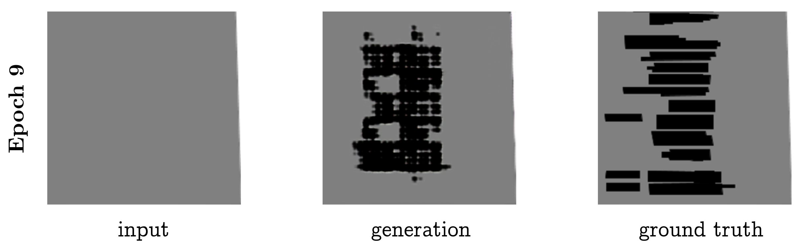

Maxwell Forbes
CSE 557 Final Project Report
December 15, 2017
Procedural generation affords the creation of large, authentic looking environments with far less time and effort than manual modeling.
The domain of urban procedural generation can be roughly split into three sub-problems: layout modelling (maps and roads), building modelling (3D geometries), and facade modelling (3D facades and textures).1 Exciting advances in all of these areas have led to remarkably realistic results, such as generating cities that expand over time2 and villages that grow based on their geography.3
While procedural generation offers great gains compared to manually creating content, a key problem still exists: the designers of such generation systems create the algorithms by manually designing and encoding grammars that produce realistic looking results. This process requires substantial domain expertise and significant trial and error. In other words, procedural generation does not remove the manual effort required to generate large cities; it simply shifts the effort from 3D modeling to algorithm design!
However, for city layouts, freely available data from crowdsourced map projects now exist. From this data, it may be possible to train a machine learning model that can automatically generate city layouts without any hand-tuned grammar rules.
In addition to simply removing the manual work of designing generation algorithms, a machine learning model offers other pragmatic advantages to virtual city creators. For example, a model would learn to generate cities in the style of the geographic area on which it was trained. An old European town will present different layout patterns than a bustling metropolis like Tokyo. A machine learning model could capture these differences simply by being retrained on different data, without needed to re-design the parameters or grammars of the generation algorithm.
In this project, we approach the first domain of urban procedural generation: generating the layout for a city. Within this domain, we further restrict our focus to the following task: given a road network and city features (like water and parks), fill in the buildings inside of blocks. Figure TODO shows a visual depiction of our task.
TODO: figure for task
We split this overall task into two subtasks. In the first subtask, we extract individual blocks with their buildings laid out on top of them. The goal is to generate the buildings for a single block at a time (Figure TODO (a)). This problem is more constrained, and provides an early test of the model's capabilities.
In the second subtask, we provide a larger chunk of a city as input, and ask the model to fill in buildings in all the empty blocks provided (Figure TODO (b)). This task is more difficult, because more buildings must be generated and placed within the bounds of blocks. But because we also provide geographic features like water and parks in the input, a model can potentially take advantage of these semantic cues to generate layouts that are sensitive to their surroundings.
TODO: figure both subtasks
The idea of attempting to learn the parameters of a procedural generation model is called inverse procedural modeling. Though this has never been applied to city layout generation, it has been explored by several authors in other domains.
Wu et al. (2014) learn a split grammar for facades, preferring shorter descriptions as better representations of the grammar.4 Though it does not appear to use machine learning, Inverse Procedural Modeling by Automatic Generation of L-Systems (2010) propose an approach for reverse-engineering the parameters for an L-system (grammar) given input (in their case, 2D vector images) that was generated from one.5
Other authors have used graphical models to learn how to generate shapes and textures. Fan and Wonka (2016) learned a garphical model to generate 3D buildings and facades.6 Martinovic and Gool (2013) learn a 2D context-free grammar (CFG) from a set of labeled facades.7 In A Probabilistic Model for Component-Based Shape Synthesis (2012), the authors learn a graphical model trained on hand-modeled 3D shapes (like a dinosaur or a chair) in order to generate their own novel meshes.8 Toshev et al. (2010) take inspiration from classical natural language processing, and learn the parameters of a parsing model to map point clouds that represent roofs to a hierarchy of the roof's components (e.g., main roof, hood over window, shed roof, etc.) 9.
Though these works do not use machine learning or inverse procedural generation, it is worth briefly touching upon city generation literature. Several papers present tools for editing or expanding a set of aerial images of cities. Aliaga et al. (2008, a) present a tool for making edits to an urban layout and generate roads and parcels to fit into the edited regions.10 In a followup work, Aglia et al. (2008, b) demonstrate another tool that, given an example image, synthesizes a new street network, and pastes in segments of the input image that fit well with the new road network 11.
Other work focuses on generating cities from scratch. Weber et al. (2009) simulate a city's growth over time, taking into account population growth and the according land use evolution.2 In Procedural Generation of Parcels in Urban Modeling (2012), the authors develop an algorithm for automatically splitting blocks (the spaces carved out by road networks) into parcels (areas of land ownership).12 Finally, Nishida et al. (2016) present a tool for editing road networks that takes into account the style and layout of example data.13
To the best of our knowledge, no previous work attempt the task of generating city layouts using machine learning. Because of this, a significant portion of the project time was spent collecting and preprocessing the data. For that reason, this section of the report gives a brief overview of this process.
The first task we address is: given a block, generate the buildings on the block. For this task, we process maps data from OpenStreetMaps in order to identify and extract blocks.
The overall processes of the block extraction is shown below in figure TODO.
Figure TODO: Stages of block extraction, done for the first task. The individual steps are described in the running text.
Block extraction broadly involved the following stages, each of which are illustrated above (Figure TODO):
(a) OpenStreetMaps data is parsed from its native XML format, and all ways (collections of nodes) are rendered as polygons.
(b) Crowdsourced labels are aggregated into high-level features (such as buildings and roads) and polygons are colored according to their predominant feature.
(c) Roads are the only ways that should not be rendered as polygons; they are properly drawn as polylines.
(d) Nodes that serve as the underlying points for road ways are rendered.
(e) Road nodes are rendered in varying sizes to confirm that roads are drawn independently (i.e., informing us that intersections must be discovered).
(f) Nodes are recursively collapsed by finding nodes within a geographic euclidean distance and recursively building a map of backpointers.
(g) Now that nodes connect roads together, the map may be rendered as a graph, here shown in green and blue.
(i) First stage of block discovery: blocks of small distance (up to four edges) are discovered, but duplicates exist because the same block may be discovered by multiple nodes.
(j) Deduplication of identical blocks by keeping only unique sets of vertices. (Blocks are rendered with semi-transparency; the difference can be seen here from the last step because the blocks are a lighter shade of pink, indicating they only exist once.)
(k) Increasing the maximum search depth of the block discovery algorithm, we begin to find larger sets of nodes that encompass multiple blocks (darker pink regions). Because some blocks are defined by a large number of nodes due to having curvy roads, some are still missed.
(l) Further increasing the maximum block search depth, we recover all feasible blocks. At this point, heavy duplicate coverage plagues blocks due to the algorithm discovering many false enclosing blocks.
(m) Removal of false enclosing blocks. This is done by rendering all candidate blocks and removing any large candidates that fully enclose smaller candidates.
A crucial part of the above process was devising an algorithm to find rings in the graph in order to identify candidate blocks. The algorithm is presented below in Python-like pseudocode with types. It is an augmented breadth-first search which tracks unique paths to vertices from paths starting at all neighbors of a start vertex.
NB: While presenting this algorithm, I was pointed to a simpler algorithm that takes into account the the geometry of the map: for each edge, follow edges of a maximum angle (e.g., clockwise) until the starting vertex is reached. For completeness, I still present here the algorithm that I devised to find rings in a graph.
# The overall algorithm searches from each vertex and returns the unique # set of rings discovered. def find_rings(graph: Dict[int, Set[int]]) -> List[List[int]]: return unique(find_rings_at(graph, n) for n in graph.keys()) # The bulk of the algorithm finds all rings that involve a chosen vertex up # to a maximum depth. def find_rings_at(graph: Dict[int, Set[int]], start: int, maxdepth: int) -> List[List[int]]: # Setup. start_path = [start] # type: List[int] shortest = {} # type: Dict[int, List[List[int]]] q = Queue([(start, start_path)]) # First, find sets of unique paths to surrounding vertices. while len(q) > 0: # Consider the vertex just found, a candidate "shortest path." cur, curpath = q.pop() if can_add_to_shortest(cur, curpath, shortest): if cur not in shortest: shortest[cur] = [] shortest[cur].append(curpath) # Add neighbors to queue if we haven't explored to max depth yet. if len(curpath) < maxdepth: for neighbor in graph[cur]: # No backtracking per path. if neighbor not in curpath: q.append((neighbor, curpath + [neighbor])) # Now, extract rings. They are discovered vertices with multiple paths. rings = [] for candidate in shortest.keys(): paths = shortest[candidate] if len(paths) > 1: # Use the first two paths found, and remove duplicate nodes # (first and last) from the second. p1 = paths[0] p2 = paths[1] rings.append(p1 + list(reversed(p2[1:-1]))) return rings # This helper algorithm determines whether a candidate path should be added # to the set of shortest paths to a vertex. def can_add_to_shortest(cur: int, curpath: List[int], shortest: Dict[int, List[List[int]]]) -> bool: # If shortest hasn't found cur yet, then found a new shortest path. if cur not in shortest: return True # Crowdsourced map data; might have multiple edges between two vertices. if len(curpath) == 2: return False # Interesting case: We want to add only if we've found a new path to # this node that is unique; i.e., the middle nodes (excluding start and # cur) have nothing in common with any other paths. middle = set(curpath[1:-1]) for p in shortest[cur]: exist_middle = set(p[1:-1]) if len(exist_middle.intersection(middle)) > 0: return False return True
Algorithm 1: Ring discovery in a graph.
After discovering blocks, we then match each block to the set of buildings that lie on top of that block. To do this, we perform a point-in-polygon test for every vertex of every building onto the polygon defined by every block. While this test is an approximation of a polygon-in-polygon test, it works well in practice given the shape of blocks and buildings (there are no extreme, sharp concavities in the blocks).
Finally, we pick a standard resolution, and transform all blocks and the buildings on top of them to that fixed resolution output. We the use Processing[^processing] to render all of the blocks in bulk, creating pairs of (empty, populated) blocks, rendering blocks in grey and buildings in black. A few example blocks are shown below in Figure TODO.

Figure TODO: Three examples from the dataset for task 1: generating buildings for a block.
We scrape five different regions of Seattle and extract all blocks with at least one building on them, giving a total of 1100 images, which we partition into train (521) / val (415) / test (164) splits such that the geographic regions do not overlap between the splits.
The second task we address is: given a region of a map without any buildings, generate all of the buildings.
This task is simpler from a dataset creation perspective, because it simply involves rendering two versions of a map: one with most geographic features rendered except buildings, and the second including buildings as well.
The main challenge in creating a more realistic region-filling dataset is accurately rendering a broader range of geographic features. Recall in the dataset for task 1 that we render only block outlines and buildings. For task 2, we can encode more context render other geographic features such as walkways, parks, and water. The difficulty in doing so is that these features are encoded with varying consistency, and at varying levels of abstraction.
Here are a few examples to illustrate how some features are labeled in the OpenStreetMap data:
| Tag(s) | Actual Geographic Feature |
|---|---|
| highway: yes | highway |
| highway: path | pedestrian walkway |
| man_made: pier, source: Yahoo! | walking area |
| source: Yahoo! | water |
| water: yes | water |
After selecting a variety of regions and manually adding mappings between tags, we end up with seven possible semantic categories per map that we render: (1) nothing (light grey) (blocks are colored this way), (2) buildings (red polygons), (3) roads (yellow lines), (4) water (blue polygons), (5) pedestrian areas (darker grey polygons), (6) pedestrian walkways (darker grey lines), (7) parks (green polygons). Two example renderings are shown below in Figure TODO:

Figure TODO: Two example regions in the dataset for task 2.
The only additional complication with rendering larger map segments is that the amount of map data required is significantly greater. We address this by building a small scraping pipeline that walks a given latitude, longitude geographic region by fixed window sizes (chosen to render well onto a square image).
We scrape a region encompassing the greater Seattle area: from the Puget Sound (W) to Sammamish (E), and from SeaTac (S) to Mountlake Terrace (N). This results in 2967 individual regions, which we filter to include only those with at least one building. After filtering, 1880 regions remain, which we partition into train (1680) / val (100) / test (100) splits.
We use the conditional adversarial network, proposed by Isola et al. (2017).14
This model trains two networks, a generator, and a discriminator. The generator produces candidate output images, and the discriminator attempts to distinguish between real output images and fake ones. They are trained together so that as the generator produces more realistic images, the generator also gets better at distinguishing them.
We use the same model presented in the paper, with the parameters set to be the same as in the aerial map to topography task.
For task 1, our model is able to generate fairly convincing blocks filled in with buildings.
Figure TODO: Task 1, epoch 1

Figure TODO: Task 1, epoch 9

Figure TODO: Task 1, epoch 9
We presented what is, to our knowledge, the first attempt to generate urban city layouts using machine learning. We collected two "fill in the buildings" datasets by generating custom renderings from geographic data. We showed that conditional adversarial network models perform surprisingly well on both tasks, often producing plausible results even in the absence of truly sufficient information. Our code is open source,16 and we would happily make the data available as well upon request.
In the future, we are eager to explore two lines of work. The first natrual extension is to improve the current approach. More exhaustive feature mapping would allow us to more completely capture inconsistently labeled regions like parks and waterways, and finer grained feature rendering would allow us to differentiate more waypoint types, such as freeways, arterials, and side streets. Modifying the model to account for task-specific constraints---such as that buildings have straight edges and are closed polygons---would produce even more realistic results. And of course, the current approach provides the road network as input; an even greater challenge would be to generate the roads as well (though this would likely move beyond the limits of the current model).
Even more exciting to us is the second line of future work, which is to learn models inspired by traditional approaches to procedural map generation: probabilistic grammars. While this approach would be less likely to produce visually impressive results as quickly as the current model, it would stay more true to the intent of procedural generation, which is to create systems that grow rather than fill in. Unsupervised grammar induction, while daunting, has precedent in natural language processing. Grammar learning would also transfer more easily to generating other features (roads, water, parks) than would the model proposed in this paper.
Carlos A Vanegas, Daniel G Aliaga, Peter Wonka, Pascal Müller, Paul Waddell, and Benjamin Watson. Modelling the appearance and behaviour of urban spaces. In Computer Graphics Forum, volume 29, pages 25–42. Wiley Online Library, 2010. ↩
Basil Weber, Pascal Mu ̈ller, Peter Wonka, and Markus Gross. Interactive geometric simulation of 4d cities. In Computer Graphics Forum, volume 28, pages 481–492. Wiley Online Library, 2009. ↩↩
Arnaud Emilien, Adrien Bernhardt, Adrien Peytavie, Marie-Paule Cani, and Eric Galin. Procedural generation of villages on arbitrary terrains. The Visual Computer, 28(6-8):809– 818, 2012. ↩
Fuzhang Wu, Dong-Ming Yan, Weiming Dong, Xiaopeng Zhang, and Peter Wonka. Inverse procedural modeling of facade layouts. arXiv preprint arXiv:1308.0419, 2013. ↩
Ondrej Sˇt’ava, Bedrich Beneˇs, Radomir Mˇech, Daniel G Aliaga, and Peter Kriˇstof. Inverse procedural modeling by automatic generation of l-systems. In Computer Graphics Forum, volume 29, pages 665–674. Wiley Online Library, 2010. ↩
Lubin Fan and Peter Wonka. A probabilistic model for exteriors of residential buildings. ACM Transactions on Graphics (TOG), 35(5):155, 2016. ↩
Andelo Martinovic and Luc Van Gool. Bayesian grammar learning for inverse procedural modeling. In Proceedings of the IEEE Conference on Computer Vision and Pattern Recognition, pages 201–208, 2013. ↩
Evangelos Kalogerakis, Siddhartha Chaudhuri, Daphne Koller, and Vladlen Koltun. A probabilistic model for component-based shape synthesis. ACM Transactions on Graphics (TOG), 31(4):55, 2012. ↩
Alexander Toshev, Philippos Mordohai, and Ben Taskar. Detecting and parsing architecture at city scale from range data. In Computer Vision and Pattern Recognition (CVPR), 2010 IEEE Conference on, pages 398–405. IEEE, 2010. ↩
Daniel G Aliaga, Bedˇrich Beneˇs, Carlos A Vanegas, and Nathan Andrysco. Interactive reconfiguration of urban layouts. IEEE Computer Graphics and Applications, 28(3), 2008. ↩
Daniel G Aliaga, Carlos A Vanegas, and Bedrich Benes. Interactive example-based urban layout synthesis. In ACM transactions on graphics (TOG), volume 27, page 160. ACM, 2008. ↩
Carlos A Vanegas, Tom Kelly, Basil Weber, Jan Halatsch, Daniel G Aliaga, and Pascal Müller. Procedural generation of parcels in urban modeling. In Computer graphics forum, volume 31, pages 681–690. Wiley Online Library, 2012. ↩
Gen Nishida, Ignacio Garcia-Dorado, and Daniel G Aliaga. Example-driven procedural urban roads. In Computer Graphics Forum, volume 35, pages 5–17. Wiley Online Library, 2016. ↩
Philip Isola, Jun-Yan Zhu, Tinghui Zhou, and Alexei A. Efros. Image-to-image translation with conditional adversarial networks. In CVPR, 2017. ↩
https://processing.org/ ↩
https://github.com/mbforbes/mapgen ↩